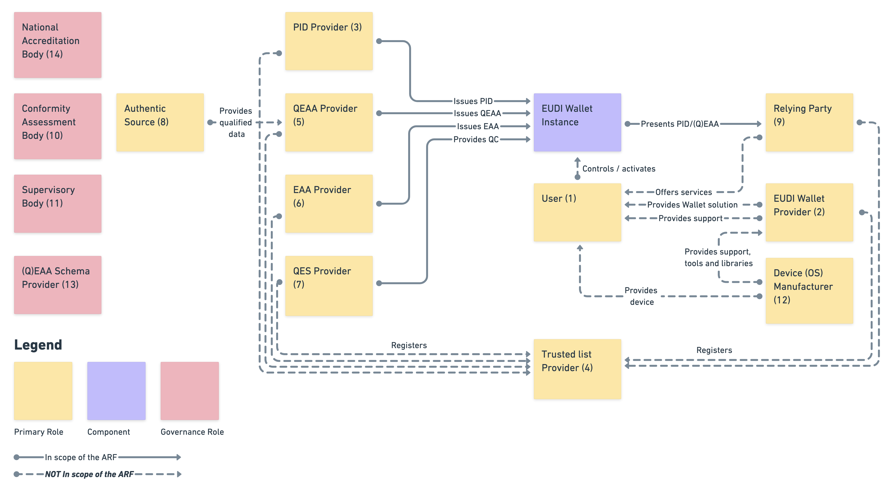
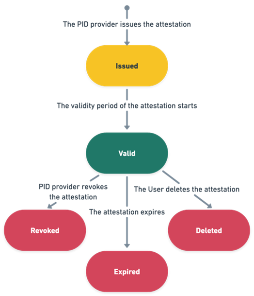
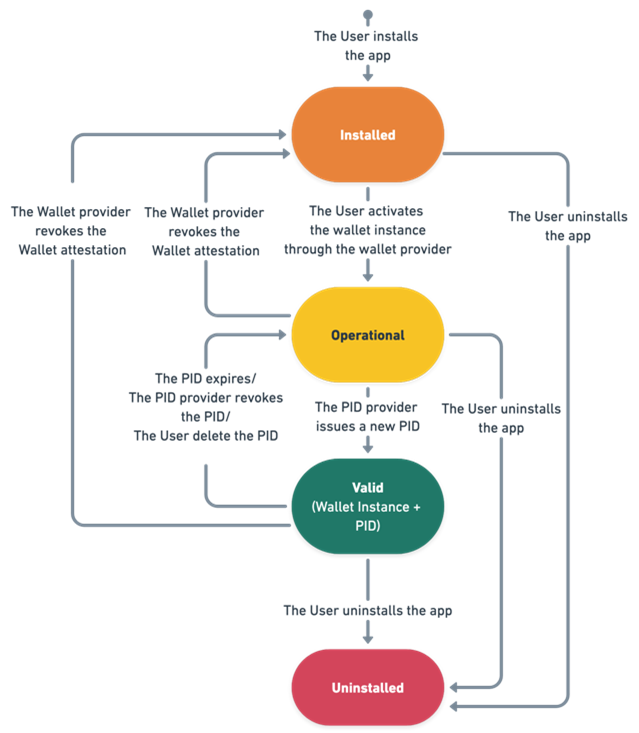
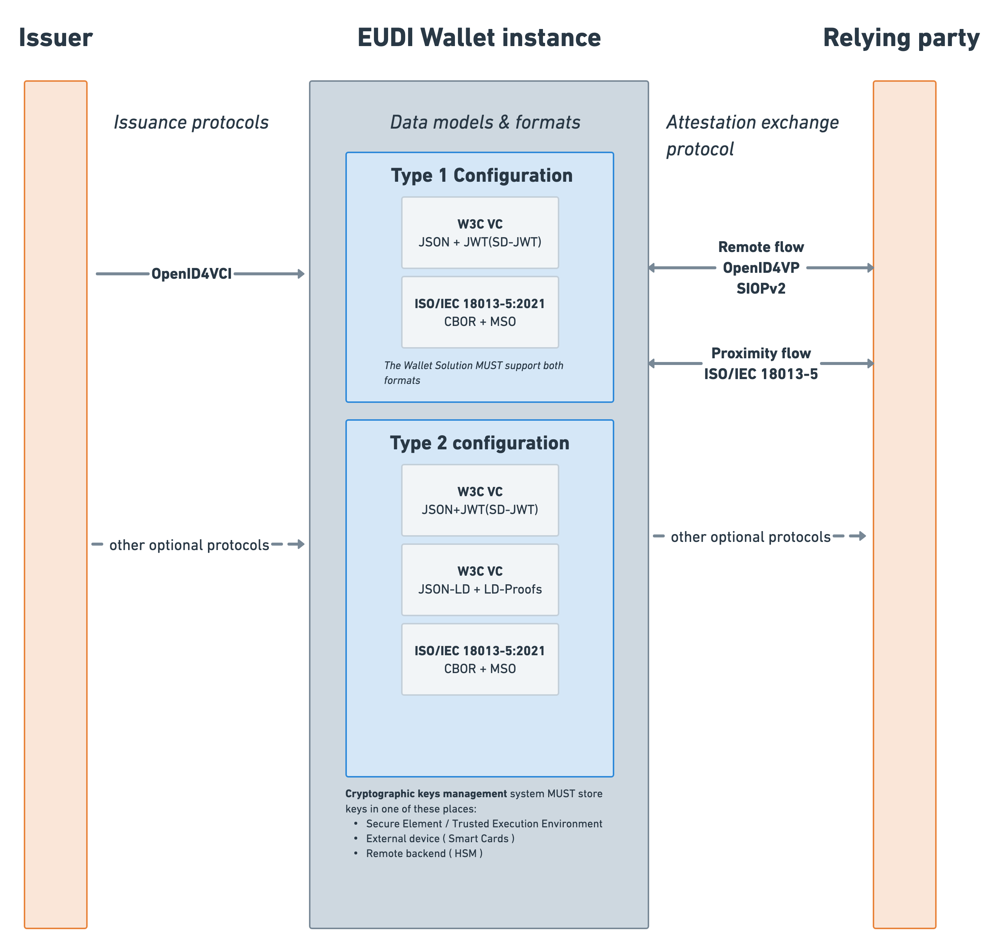

Architecture and Reference Framework
April 2023 Version 1.1.0
| Version | Date | Changes |
|---|---|---|
| 1.0.0 | 26 January 2023 | Initial version |
| 1.1.0 | 20 April 2023 | Addition of services blueprints for use cases on:
|
1. Introduction
1.1. Context
On 3 June 2021, the European Commission adopted a Recommendation[^1] calling on Member States to work towards the development of a Toolbox including a technical Architecture and Reference Framework (hereinafter the ARF), a set of common standards and technical specifications and a set of common guidelines and best practices.
The Recommendation specifies that these outcomes will serve as a basis for the implementation of the proposal for a European Digital Identity Framework[^2], without the process of developing the Toolbox interfering with, or prejudging the legislative process.
The Recommendation foresees that the Toolbox is developed by Member States’ experts in the eIDAS Expert Group^3 in close coordination with the Commission and, where relevant for the functioning of the European Digital Identity (EUDI) Wallet infrastructure, other concerned public and private sector parties.
Following the indicative timeline set out in the Recommendation, a process and working procedures were agreed on 30 September 2021 and discussed in a non-paper on a high-level description of the EUDI Wallet ecosystem, proposed by the Commission.
On this basis, an outline was defined providing a more detailed description of the EUDI Wallet concept, its functionalities and security aspects and on several core, use cases between October and December 2021. That work resulted in the Outline of the ARF, adopted by the eIDAS Expert Group in February 2022. The Outline was published on Futurium^4 for public feedback. When the feedback period closed on 15 April 2022, 36 stakeholders had provided their feedback on the Outline.
The eIDAS Expert Group has since further developed the concepts and specifications for the European Digital Identity Framework based on the Commission’s legislative proposal[^5], and will continue to do so until the legislative negotiations have been concluded and implementing acts have been adopted.
The eIDAS Expert Group adopted the present document on 26 January 2023.
1.2. Purpose of This Document
The purpose of the document is to provide all the specifications needed to develop an interoperable EUDI Wallet Solution based on common standards and practices. The document presents a state-of-play of ongoing work of the eIDAS Expert Group and does not imply any formal agreement regarding its content or the legislative proposal. This document will be complemented and updated over time through the process of establishing the toolbox, as described in Chapter 8. Once completed the document will describe a comprehensive Architecture and Reference Framework covering all the specifications needed to implement an European Digital Identity Wallet Solution.
While chapters 2-4 and 7-8 are descriptive, Chapter 5 and 6 specify requirements for PID and (Q)EAA Providers and EUDI Wallet Solution implementers. The capitalised imperatives in the document are used in accordance with RFC 2119.
The document itself holds no legal value and shall not prejudge the forthcoming legislative process and the final mandatory legal requirements for European Digital Identity Wallets. The ARF will be aligned to the outcome of the legislative negotiations of the proposal for a European Digital Identity Framework. Only the finally adopted European Digital Identity Framework Regulation, and the implementing and delegated acts adopted under that legal basis, will be mandatory.
1.3. Use of This Document
This document is mainly meant to be used by the European Commission developing a reference implementation of an EUDI Wallet and the consortia piloting the use of the reference implementation in the context of Large Scale Pilots. Experience of implementing this specification may lead to improvements of this document, in accordance with Chapter 8.
1.3.1. The Reference Implementation of an EUDI Wallet
The Commission will provide a reference implementation of an EUDI Wallet in a mobile form factor[^6]. The code for the EUDI Wallet reference implementation will be provided as open source for re-use by implementers across Europe. The first implementers will be the projects selected to carry out Large Scale Pilots (LSPs), following a call for proposals. The LSP projects will be engaged in the further development of the reference implementation of an EUDI Wallet. The Commission will also initially supply central services as needed for the functioning of the EUDI Wallet reference implementation.
The Commission intends to use the ARF to develop the EUDI Wallet reference implementation.
1.3.2. Guidance for the Large Scale Pilots (LSP)
To support the development of a reference implementation of an EUDI Wallet and to pilot its usage across different priority use cases, the Commission launched a call for proposals on 22nd February 2022 under the Digital Europe Programme to pilot large-scale use cases for the EUDI Wallet.
The objective of the Large Scale Pilots (LSP) call is to co-fund the piloting of the EUDI Wallet based on a reference implementation of an EUDI Wallet, taking into account project specificities, existing national notified eID and wallet developments and implementation situations, around the different cross-border use cases involving both public and private stakeholders.
The ARF will be used by the LSPs to inform and guide pilot system design and architecture development together with the release of the reference implementation.
The LSPs are expected to provide feedback on the ARF as they develop and interact with Relying Party services, Qualified or non-qualified Electronic Attestations of Attributes (Q)EAA Providers, Person Identification Data (PID) Providers and Users in meaningful transactions under the proposed use cases.
2. Definitions
In addition to Article 3 of the proposed amendment to the legal text, the following definitions are provided to either highlight those most relevant to the Architecture and Reference Framework or to introduce additional terms not defined in the legal text (denoted with a *).
| Term | Description |
|---|---|
| Attribute | A feature, characteristic or quality of a natural or legal person or of an entity, in electronic form. - eIDAS Regulation amendment proposal |
| Authentic Source | A repository or system, held under the responsibility of a public sector body or private entity, that contains attributes about a natural or legal person and is considered to be the primary source of that information or recognised as authentic in national law. – eIDAS Regulation amendment proposal |
| Electronic Attestation of Attributes (EAAs) | An attestation in electronic form that allows the authentication of attributes - eIDAS Regulation amendment proposal |
| Issuer* | A Person Identification Data Provider issuing PID or a (Qualified) Trust Service Provider issuing (Q)EAA. In the case of the EUDI Wallet there may be multiple Issuers for PID and (Q)EAA. |
| National Accreditation Bodies (NAB)* | National Accreditation Bodies (NAB) under Regulation (EC) No 765/2008 are the bodies in Member States that perform accreditation with authority derived from the State. |
| Person Identification Data (PID) | A set of data enabling the identity of a natural or legal person, or a natural person representing a legal person to be established - eIDAS Regulation. |
| Person Identification Data Provider* | A Member State or legal entity providing Person Identification Data to Users. |
| Public Key Infrastructure (PKI)* | Public Key Infrastructure (PKI) denote systems, software, and communication protocols that are used by EUDI Wallet components to distribute, manage, and control public keys. A PKI publishes public keys and establishes trust within an environment by validating and verifying the public keys mapping to an entity. |
| Qualified Electronic Attestations of Attributes Provider | An Electronic Attestation of Attributes, which is issued by a Qualified Trust Service Provider and meets the requirements laid down in Annex V. - eIDAS Regulation amendment proposal . |
| Qualified Electronic Signature Creation Device (QSCD) | Configured software or hardware used to create an electronic signature that meets the requirements laid down in Annex II of the eIDAS Regulation amendment proposal. -eIDAS Regulation and eIDAS Regulation amendment proposal |
| Qualified Trust Service Provider (QTSP) | A Trust Service Provider who provides one or more Qualified Trust Services and is granted the qualified status by the supervisory body. - eIDAS Regulation |
| Relying Party* | A natural or legal person that relies upon an electronic identification or a Trust Service. – eIDAS Regulation In the case of the EUDI Wallet, the Relying Party relies on electronic identification or the Trust Service originating from an EUDI Wallet. |
| Selective Disclosure* | The capability of the EUDI Wallet that enables the User to present a subset of attributes provided by the PID and/or (Q)EAAs. |
| Trust* | Trust is the characteristic that one party, is willing to rely upon a third-party entity to execute a set of actions and/or to make a set of assertions about a set of subjects and/or scopes1. |
| Trust Framework* | A legally enforceable set of operational and technical rules and agreements that govern a multi-party system designed for conducting specific types of transactions among a community of participants and bound by a common set of requirements. |
| Trust model* | Collection of rules that ensure the legitimacy of the components and the entities involved in the EUDI Wallet ecosystem. |
| Trust Service Provider (TSP) | A natural or a legal person who provides one or more Trust Services, either as a qualified or as a non-qualified Trust Service Provider. - eIDAS Regulation |
| Trust Service | An electronic service normally provided against payment which consists of: (a) the creation, verification, and validation of electronic signatures, electronic seals or electronic time stamps, electronic registered delivery services, electronic attestation of attributes and certificates related to those services; (b) the creation, verification and validation of certificates for website authentication; (c) the preservation of electronic signatures, seals or certificates related to those services; (d) the electronic archiving of electronic documents; (e) the management of remote electronic signature and seal creation devices; (f) the recording of electronic data into an electronic ledger. - eIDAS Regulation amendment proposal |
| Trusted List* | Repository of information about authoritative entities in a particular legal or contractual context which provides information about their current and historical status. Trusted Lists can be implemented in different ways. |
| User* | Is a natural or legal person using an EUDI Wallet. |
| EUDI Wallet Instance* | Instance of an EUDI Wallet Solution belonging to and which is controlled by a User. |
| EUDI Wallet Providers* | An organisation, public or private, responsible for the operation of a eIDAS-compliant EUDI Wallet Solution that can be instantiated, e.g. through installation and initialization. |
| EUDI Wallet Solution* | An EUDI Wallet Solution is the entire product and service owned by an EUDI Wallet Provider, offered to all Users of that solution. An EUDI Wallet solution can be certified as being EUDI-compliant by a CAB. |
“OASIS Trust,” [Online]. Available: http://docs.oasis-open.org/ws-sx/ws-trust/v1.4/ws-trust.html.↩︎
Table 1: Definitions
* Additional to definitions in Article 3 of the eIDAS Regulation or its amendment proposal.
3. Use cases for the EUDI Wallet
The development of EUDI Wallet specifications is steered by use cases that facilitate understanding of user experience while capturing the value proposition and business requirements of the EUDI Wallet. To accomplish this, the eIDAS Expert Group begins by creating service blueprints for each EUDI Wallet use case. These blueprints are visual representations of the various components and processes involved in providing a service to users and serve as a tool for pinpointing potential areas for enhancement, optimising user experience, and streamlining service delivery. These blueprints then act as the basis for establishing use case rulebooks and common specifications for all use cases. The service blueprints of the use case can be found in the annexes as attached documents. It is important to note that the service blueprint documents offer a viable solution for each use case, but alternatives and optional steps do exist. For instance, displaying stored data to which the user has already given consent might be optional. Furthermore, user journeys may differ depending on the chosen implementation approach, such as asynchronous attribute storage or synchronous retrieval. This could affect aspects like providing consent to retrieve and share data. The eIDAS Expert Group has described service blueprints for the following use cases.
3.1 Identification and authentication to access online services
The primary purpose of the EUDI Wallet is to offer secure identification and authentication of users at a high Level of Assurance (LoA) for both public and private online services. This essential functionality ensures that Relying Parties can confidently verify that they are interacting with the correct individual. In this use case, the User is utilising the EUDI Wallet to confirm their identity. They frequently access online services that demand authentication and currently employ multiple methods for identity verification while accessing these services. The User is also concerned about sharing person identification data (PID) during online interactions. Their objectives include identifying themselves with services requiring user identification and maintaining control over personal data sharing. This use case encompasses the entire EUDI Wallet life cycle from the User's viewpoint, from obtaining a valid wallet to identifying and authenticating the user within an online service. The focus of the current description is a workable remote same-device flow (refer to section 6.4), where a natural person User employs a single mobile device for both securing the session and accessing the service's information.
3.2 Mobile Driving Licence
A significant use case for the EUDI Wallet involves allowing Users to acquire, store, and display a digital document as the mobile Driving Licence (mDL) to prove their driving privileges. In this use case the User employs an EUDI Wallet to present a mDL to a third party like a police officer. The use case description concentrates on proximity supervised and unsupervised flows, which involve scenarios where the User is physically near a Relying Party, and the mDL attribute exchange and disclosure occurs using proximity technologies (e.g. NFC, Bluetooth). The two proximity flows have one significant difference: in the supervised flow, the EUDI Wallet presents mDL attributes to a human Relying Party or under their supervision (who may also use a device); whereas in the unsupervised flow, the EUDI Wallet presents mDL attributes to a machine without human oversight.
3.3. Other use cases
In subsequent versions of this document, the following use cases will be detailed as service blueprints:
- Health
Easy access to health data is crucial in both national and cross-border contexts. EUDI Wallet may enable access to patient summary, ePrescriptions, etc.
- Educational credentials and professional qualifications
Providing documents for qualification recognition procedures can be costly and time-consuming for end Users, companies and employers, education and training providers, and other academic institutions. For example, digital diploma attestations could be presented cross-border in a verifiable, trusted, and consumable format to another education or training institution or a prospective employer. The EUDI Wallet may be a repository for educational digital credentials as Electronic Attestations of Attributes and a means for exchanging them by a learner.
- Digital Finance
The EUDI Wallet shall facilitate complying with strong customer authentication requirements. In line with the Commission’s Retail Payments Strategy[^7], the use case would be developed in close coordination with Member States’ advisory groups on retail payments and the finance industry.
- Digital Travel Credential
EUDI Wallet can store Digital Travel Credentials enabling Users to benefit from more seamless travel.
This work may in future be extended to additional use cases.
4. European Digital Identity Wallet Ecosystem
This chapter describes the EUDI Wallet ecosystem as it is foreseen in the Commission’s legislative proposal.
4.1. Roles in the Ecosystem
The roles of the EUDI Wallet ecosystem are described in Figure 1 and detailed in the following sections.
{ width=100% }
Figure 1: Overview of the EUDI Wallet roles
-
End Users of EUDI Wallets
-
EUDI Wallet Providers
-
Person Identification Data Providers
-
Trusted Lists providers
-
Qualified Electronic Attestation of Attributes (QEAA) Providers
-
Non-qualified Electronic Attestation of Attributes (EAA) Providers
-
Qualified and non-qualified certificate for electronic signature/seal Providers
-
Authentic Sources
-
Relying Parties
-
Conformity Assessment Bodies (CAB)
-
Supervisory bodies
-
Device manufacturers and related subsystems providers
-
(Q)EAA Schema Providers
-
National Accreditation Bodies
4.1.1. Users of EUDI Wallet
Users of EUDI Wallets use the EUDI Wallet to receive, store and present attestations (PID, QEAA or EAA) about themselves, including to prove their identity. Users may create Qualified Electronic Signatures and Seals (QES) using an EUDI Wallet.
Who can be a User of an EUDI Wallet depends on national law. The use of an EUDI Wallet by citizens is not mandatory under the legislative proposal. However, Member States are obliged to offer at least one EUDI Wallet Solution to their citizens.
4.1.2. EUDI Wallet Provider
EUDI Wallet Provider are Member States or organisations either mandated or recognized by Member States making the EUDI Wallet available for end Users. The terms and conditions of the mandate or recognition are for each Member State to determine.
The EUDI Wallet Providers make available to Users through an EUDI Wallet Solution a combination of several products and Trust Services foreseen in the legal proposal, which give the User full control over the use of their Person Identification Data (PID) and Qualified or non-qualified Electronic Attestations of Attributes (QEAA or EAA), and any other personal data within their EUDI Wallet. From a technical viewpoint, this may also imply guaranteeing a User sole control over sensitive cryptographic material (e.g., private keys) related to the use of these data in some scenarios, including electronic identification, signature / seal.
EUDI Wallet Providers are responsible for ensuring compliance with the requirements for EUDI Wallets.
4.1.3. Person Identification Data (PID) Providers
PID Providers are trusted entities responsible to:
-
verify the identity of the EUDI Wallet User in compliance with LoA High requirements,
-
issue PID to the EUDI Wallet in a harmonised common format and
-
make available information[^8] for Relying Parties to verify the validity of the PID.
The terms and conditions of these services are for each Member State to determine.
PID Providers may e.g., be the same organisations that today issue official identity documents, electronic identity means, EUDI Wallet Providers etc. EUDI Wallet Providers may or may not be the same organisations as PID Providers.
4.1.4. Trusted List Providers
The specific status of a role in the EUDI Wallet ecosystem shall be verified in a trustworthy manner. Such roles are:
-
EUDI Wallet Providers
-
Person Identification Data Providers
-
Qualified Electronic Attestation of Attributes (QEAA) providers
-
Qualified certificate for electronic signature/seal (QC) providers
-
Relying Parties
-
Non-qualified Electronic Attestation of Attributes (EAA) providers
-
Non-qualified certificate for electronic signature/seal providers
-
Providers of other Trust Services
-
Catalogues of attributes and schemes for the attestations of attribute providers
Other roles may be necessary and thus need to be defined and explicitly mentioned depending on the specific role and their criticality for example the different roles and actors involved with remote signing processes.
When used, Trusted List[^9] need to provide a registration service for the relevant entities, maintain a registry and enable third party access to the registry information. The terms and conditions of entities to become registered are for each registrar to determine unless specified in e.g., sectoral rules.
4.1.5. Qualified Electronic Attestation of Attributes Providers
Qualified EAA are provided by QTSPs. The general Trust Framework for QTSPs apply also to QEAA, but specific rules for this Trust Service need to be defined as well. QEAA Providers maintain an interface for requesting and providing QEAAs, including a mutual authentication interface with EUDI Wallets and potentially an interface towards Authentic Sources to verify attributes. QEAA Providers provide information or the location of the services that can be used to enquire about the validity status of the QEAAs, without having an ability to receive any information about the use of the attestations. The terms and conditions of these services are for each QTSP to determine, beyond what is specified in the eIDAS Regulation.
4.1.6. Non-Qualified Electronic Attestation of Attributes Providers
Non-qualified EAA can be provided by any Trust Service Provider. While they are supervised under eIDAS, it can be assumed that other legal or contractual frameworks than eIDAS mostly govern the rules for provision, use and recognition of EAA. Such other frameworks may cover policy areas such as driving licences, educational credentials, digital payments, although they may also rely on qualified Electronic Attestation of Attributes Providers. For EAA to be used, TSPs offer Users a way to request and obtain EAA, meaning they need to technically comply with EUDI Wallet interface specifications. Depending on the domain rules, EAA providers may provide validity information about EAA, without having an ability to receive any information about the use of the EAA. The terms and conditions of issuing EAAs and related services are subject to sectoral rules.
4.1.7. Qualified and Non-Qualified Certificates for Electronic Signature/Seal Providers
Article 6a(3) of COM(2021)281 final requires the EUDI Wallet to enable the User to create qualified electronic signatures or seals. This goal can be reached by several ways:
-
The EUDI Wallet is certified as a qualified signature/seal creation device (QSCD), or
-
It implements secure authentication and signature/seal invocation capabilities as a part of a local QSCD or a remote QSCD managed by a QTSP.
EUDI Wallet interfaces with QSCDs will be further expanded in future versions of this document.
4.1.8. Providers of other Trust Services
EUDI Wallet interaction with providers of other qualified or non-qualified Trust Services such as timestamps may be further described in future versions of the ARF.
4.1.9. Authentic Sources
Authentic Sources are the public or private repositories or systems recognised or required by law containing attributes about a natural or legal persons. The Authentic Sources in scope of Annex VI of the legislative proposal are sources for attributes on address, age, gender, civil status, family composition, nationality, education and training qualifications titles and licences, professional qualifications titles and licences, public permits and licences, financial and company data. Authentic Sources in scope of Annex VI are required to provide interfaces to QEAA Providers to verify the authenticity of the above attributes, either directly or via designated intermediaries recognised at national level. Authentic Sources may also issue (Q)EAA-s themselves if they meet the requirements of the eIDAS Regulation. It is up to the Member States to define terms and conditions for the provisioning of these services, but according to the minimum technical specifications, standards, and procedures applicable to the verification procedures for qualified electronic attestations of attributes.
4.1.10. Relying Parties
Relying Parties are natural or legal persons that rely upon an electronic identification or a Trust Service. In the context of EUDI Wallets, they request the necessary attributes contained within the PID dataset, QEAA and EAA from EUDI Wallet Users to rely on the EUDI Wallet, subject to the acceptance by the owner of the Wallet (User) and within the limits of applicable legislation and rules. The reason for reliance on the EUDI Wallet may be a legal requirement, a contractual agreement, or their own decision. To rely on the EUDI Wallet, Relying Parties need to inform the Member State where they are established and their intention for doing so. Relying Parties need to maintain an interface with the EUDI Wallet to request attestations with mutual authentication. Relying Parties are responsible for authenticating PID and (Q)EAA.
4.1.11. Conformity Assessment Bodies (CAB)
The EUDI Wallets must be certified by accredited public or private bodies designated by Member States[^10]. QTSPs need to be audited regularly by Conformity Assessment Bodies (CABs). CABs are accredited by a national accreditation body according to Regulation 765/2008 as responsible for carrying out assessments on which Member States will have to rely before issuing a EUDI Wallet or providing the qualified status to a Trust Service Provider. The standards and schemes used by CABs to fulfil their tasks to certify EUDI Wallets are specified further in the Toolbox process.
4.1.12. Supervisory Bodies
The supervisory bodies are notified to the Commission by the Member States, which supervise QTSPs and act, if necessary, in relation to non-qualified Trust Service Providers.
4.1.13. Device Manufacturers and Related Entities
EUDI Wallets will have several interfaces with the devices they are based on, which may be for the following purposes:
-
Local storage.
-
Online Internet access.
-
Sensors such as smartphone cameras, IR sensors, microphones, etc.
-
Offline communication channels such as Bluetooth Low Energy (BLE), WIFI Aware, Near Field Communication (NFC).
-
Emitters such as screens, flashlights, speakers etc.
-
Smart cards and secure elements.
For secure cryptographic material storage, specific devices or services may be interfaced with. Other related entities may be service providers such as cloud service providers, app store providers etc.
The legal proposal sets constraints (e.g., compliance with LoA High) for which kinds of devices and services may be used for the purpose of issuing the EUDI Wallet. Likewise, the availability as well as terms and conditions of device interface providers and related service providers will set further constraints for EUDI Wallet Providers.
4.1.14. Qualified and Non-Qualified Electronic Attestation of Attributes Schema Providers
(Q)EAA Schema Providers publish schemas and vocabularies describing (Q)EAA structure and semantics. It may enable other entities such as Relying Parties to discover and validate (Q)EAA. The Commission sets out the minimum technical specifications, standards, and procedures for this purpose. Common schemas, including by sector- specific organisations are critical for wide-spread adoption of (Q)EAAs.
4.1.15. National Accreditation Bodies
National Accreditation Bodies (NAB) under Regulation (EC) No 765/2008[^11] are the bodies in Member States that performs accreditation with authority derived from the Member State. NABs accredit CABs as competent, independent, and supervised professional certification bodies in charge of certifying products/services/processes against normative document(s) establishing the requirements (e.g., legislations, specifications, protection profiles). NABs monitor the CABs to which they have issued an accreditation certificate.
4.2. Lifecycle of an EUDI Wallet
The legal text defines the EUDI Wallet on a high level of abstraction, as well as for the EUDI Wallet Providers that carry the legal obligation to make sure that the inhabitants/residents of a Member State can get a valid and fully functional EUDI Wallet. The lifecycle of an EUDI Wallet will have some interactions with the Trusted List Providers that specify the status of a role in the EUDI Wallet ecosystem in a trustworthy manner. Developing an Architecture and Reference Framework that must provide guidance to the development of such EUDI Wallet requires a more detailed level of abstraction to be efficient and to yield a sufficiently expressive architecture description to be prescriptive.
This chapter starts from a minimal object model and defines the lifecycle of the core concepts: EUDI Wallet Solution, PID, (Q)EAA, and EUDI Wallet Instance. These are chosen as a starting point because the joint development of the ARF showed that the lifecycles of these concepts are closely intertwined, which led to unclear description and consequently misunderstandings.
The object model will be extended as required in future versions of the ARF.
4.2.1. Simplified EUDI Wallet Object Model
Figure 2 below distinguishes the concepts of EUDI Wallet Solution and EUDI Wallet Instance. An EUDI Wallet Solution is the entire product and/or service provided by a EUDI Wallet Provider. A EUDI Wallet Instance is a personal instance of a EUDI Wallet Solution that belongs to and is controlled by a User.
 { width=100% }
{ width=100% }
Figure 2: Simplified EUDI Wallet Object Model
This definition is not prescriptive of form factor, hence depending on the implementation a EUDI Wallet Instance may consist of a single mobile app, or a set of local and remote components available to a specific User.
4.2.2. PID and (Q)EAA Lifecycles
The lifecycles of PID and (Q)EAA are essentially identical, however, for the scope of this description we refer subsequently only to PID. The text of this section applied to PID applies mutatis mutandis to (Q)EAA.
PID in the context of the EUDI Wallet begins its lifecycle when being issued to a EUDI Wallet Instance. Please note that this means that the management of attributes in the Authentic Source (adhering to national structures and attribute definitions) is outside of the scope of the ARF.
Note that for certain use cases, the PID may be pre-provisioned, meaning it is not yet valid when issued, but reaches its validity later. If PID is issued on or after the validity start date, it is immediately considered the state directly changes to valid. This means, however, that PID could be “pre-issued”.
{ width=100% }
Figure 3: State-chart of PID
There are two possible transitions from a valid PID: either it automatically expires, by passage to the ‘validity end date’ or it is actively revoked by its Provider. Expiration and revocation are essentially independent transitions. Once PID is expired or revoked, it cannot transition back to valid. Update of PID (i.e., because of a name change) always requires re-issuing.
4.2.3. EUDI Wallet Solution Lifecycle
An EUDI Wallet Solution has a state of its own, as defined by Article 10a of the Regulation. The state of the Solution affects the state of all EUDI Wallet Instances of that EUDI Wallet Solution. The Candidate state is the first state of a EUDI Wallet Solution. This means it is fully implemented and the EUDI Wallet Provider requests the solution to be certified as EUDI Wallet.
If all the legal and technical criteria have been met, including the certification of the Wallet Solution by CAB(s), then a Member State may decide to start providing Instances of the Solution to Users. The state of the Solution becomes “valid”. According to Article 6d, Member State informs the Commission of each change in the certification status of their EUDI Wallet Solutions. This means the EUDI Wallet Solution can be officially launched, and Instances of the Solution can be provided to Users.
 { width=100% }
{ width=100% }
Figure 4: State-chart of Wallet Solution
Under the legal conditions in Article 10a, paragraph 1, the issuing Member State can temporarily suspend an EUDI Wallet Solution. This would for example be the result of a critical security issue on that EUDI Wallet Solution. This leads to the suspended state. Under Article 10a, paragraph 2, the issuing Member State can unsuspend the Wallet Solution and continue issuance, bringing the Solution back to the valid state. Under paragraph 3, the EUDI Wallet Solution can be completely withdrawn.
4.2.4. EUDI Wallet Instance Lifecycle
A EUDI Wallet Instance starts its life based on a valid EUDI Wallet Solution. The EUDI Wallet Provider provides a EUDI Wallet Solution to the User which is considered a Wallet Instance in operational state once installed and activated by the User. Depending on the form factor and implementation, providing an instance can require several actions, e.g., installation and initialization in case of a mobile EUDI Wallet. Such an EUDI Wallet Instance could already be used for non EUDI specific functions, such as storing loyalty cards or non-personalized train tickets or any other attestation that does not mandate a binding to a valid PID.
Once an EUDI Wallet Instance is initialised, it is considered valid, meaning it is recognized by a PID Provider and it holds a valid PID set. If the PID expires or is revoked, the EUDI Wallet is not automatically unusable, its state is merely downgraded back to operational. This may affect the validity of a (Q)EAA or a certificate for QES.
{ width=100% }
Figure 5: State-chart of Wallet Instance
It is currently assumed that only the User[^12] will be able to deactivate a EUDI Wallet Instance. Please note that this is independent from the possibility of a PID or (Q)EAA Provider to revoke their attestations.
5. Requirements for Issuing PID and (Q)EAA
5.1. Person Identification Data
This chapter details the PID set as presented by the EUDI Wallet.
A PID Provider may issue a PID set to the EUDI Wallet and enable the use of the EUDI Wallet as an electronic identification means when accessing online and offline services.
The mechanisms through which the PID is generated and provided to the EUDI Wallet are up to the Member States and are only constrained by legal requirements such as the requirements of LoA High, GDPR or any other national or union law.
In the following the data format as presented to the Relying Party will be described, without any assumptions on how the EUDI Wallet retrieved or generated this data beforehand.
5.1.1 The Dataset
5.1.2.1. Principles for PID set revision
This chapter proposes a revision of the eIDAS optional datasets specified in eIDAS CIR 2015/1501[^13] and discusses further specification, data minimization and identifiers.
The revision of the eIDAS optional dataset proposed herein is constructed based on the following principles:
-
No two persons should have the same PID set of mandatory attributes.
-
The PID set should at least contain the minimum set of attributes specified in eIDAS CIR 2015/1501 as mandatory.
-
The mandatory data set is by nature limited to the (narrow) intersection of what all Member States can provide for all natural and legal persons and what is needed for electronic identification purposes.
5.1.1.1. PID Attributes for Natural Persons
The below table provides an overview of the current PID attributes that are included in the eIDAS framework, and the proposed additional optional attributes that are suggested to also be included.
| Mandatory eIDAS Attributes | Optional eIDAS Attributes | Possible additional optional attributes |
|---|---|---|
| Current Family Name | Family Name at Birth | Nationality/Citizenship* |
| Current First Names | First Names at Birth | |
| Date of Birth | Place of Birth | Optional attributes used at national level, e.g., tax number, social security number etc. |
| Unique Identifier | Current Address | |
| Gender |
Table 2 - Mandatory and optional PID attributes for natural persons
*Nationality/Citizenship – this is a potential multi-value attribute because citizens may have more than one nationality. However, Nationality/Citizenship may also be communicated in the form of (Q)EAA’s, to allow citizens to demonstrate a given nationality, without updating the PID set or involving the PID Provider.
Possible additional optional attributes have been added to facilitate a wider range of authentication options both online and offline as well as addressing learning from the current eIDAS implementations.
Metadata associated with the PID may additionally detail the date of issuance and/or expiration, the issuing authority and/or Member State, information necessary to perform holder binding and/or proof of possession, the information or location of the services that can be used to enquire about the validity status of and potentially more information.
5.1.2 Issuing requirements for PID
The following table defines the requirements applicable to PID regarding what information is included in the attestation, such as for purposes of validity checks, authenticity, validation, policies, the data model, and formats.
Future versions of this text may expand the table to specify requirements. Note that these requirements are primarily aimed at the first version of the EUDI Wallet Solution specifications, and that they may change as the specifications evolve.
| # | Requirement |
|---|---|
| 1 | PID attestation MUST contain the information required to identify the PID Provider. |
| 2 | PID attestation MUST contain the information required to perform a data integrity check. |
| 3 | PID attestation MUST contain the information required for verifying the authenticity. |
| 4 | PID attestation MUST contain all the information required to perform validity status checks on the attestation. |
| 5 | PID attestation MUST include all the information (as an attribute or as any other signed value) required to perform verification of the holder binding by a Relying Party. |
| 6 | PID attestation MUST be issued to be presented in accordance with both the data model specified in ISO/IEC 18013-5:2021 and the W3C Verifiable Credentials Data Model 1.1. |
| 7 | PID attestation MUST be encoded as CBOR and JSON format. |
| 8 | PID attestation MUST enable Selective Disclosure of attributes by using Selective Disclosure for JWTs (SD-JWT) and Mobile Security Object (ISO/IEC 18013-5) scheme accordingly to the data model. |
| 9 | PID attestation MUST use signatures and encryptions formats as detailed in JOSE RFCs and COSE RFCs. |
| 10 | PID attestation MUST use signature and encryption algorithms in accordance with SOG-IS ACM. |
Table 3 - Issuing requirements for PID
5.2. Qualified and Non-Qualified Electronic Attestation of Attribute
5.2.1 Issuing requirements for (Q)EAA
The following table defines the requirements applicable to (Q)EAA-s regarding what information is included in the attestation, such as for purposes of validity checks, authenticity, validation, policies related to key management, the data model, and formats.
(Q)EAA-s can be also issued under requirements applicable for PID.
Future versions of this text may expand the table to specify requirements. Note that these requirements are primarily aimed at the first version of the EUDI Wallet Solution specifications, and that they may change as the specifications evolve.
| # | Requirement |
|---|---|
| 1 | (Q)EAA MUST contain the information required to identify the Issuer. |
| 2 | (Q)EAA MUST contain the information required to perform a data integrity check. |
| 3 | (Q)EAA MUST contain the information required for verifying the authenticity of the (Q)EAA. |
| 4 | (Q)EAA MUST contain all the information required to perform validity status checks on the (Q)EAA. |
| 6 | (Q)EAA SHOULD include all the information (as an attribute or as any other signed value) required to perform verification of the holder binding by a Relying Party. |
| 7 | (Q)EAA MUST be issued in accordance with one of the data model specifications: ISO/IEC 18013-5:2021, W3C Verifiable Credentials Data Model 1.1. |
| 8 | (Q)EAA SHOULD be encoded as one of the following formats: CBOR or JSON accordingly to the data model used for the attestation. |
| 9 | EAA MAY be encoded as JSON-LD. |
| 10 | (Q)EAA SHOULD enable Selective Disclosure of attributes either by using Selective Disclosure for JWTs (SD-JWT) or Mobile Security Object (ISO/IEC 18013-5) scheme accordingly to the data model used for the attestation. |
| 11 | (Q)EAA SHOULD use one of the following signature and encryption formats as detailed in: JOSE RFCs, COSE RFCs accordingly to data model used for the attestation. |
| 12 | (Q)EAA SHOULD use signature and encryption algorithms in accordance with SOG-IS ACM. |
| 13 | (Q)EAA SHOULD be issued accordingly to OpenID4VCI protocol. |
Table 4 - Issuing requirements for (Q)EAA
6. Reference Architecture and Flows
The reference architecture represents a set of choices made during the architecture design process for EUDI Wallet Solutions. These choices were informed by the need for EUDI Wallet Solutions to support various scenarios where either the User or the Relying Party, or both, are offline while providing flexibility for Member States to implement an EUDI Wallet Solution in various configurations of components.
6.1. Design considerations
To limit complexity, the initial EUDI Wallet Solution specifications will include only a minimum number of solution components that enable the use of the EUDI Wallet Instance for identification of the User, so that it can function as an eID means.
The choices herein are neither a reflection of relative importance nor a long-term commitment. Instead, the selection was guided by factors such as the availability and maturity of standards and specifications, an estimation of ease of adoption, and how much flexibility (in terms of use cases enabled) is afforded by each solution component.
The solution components proposed herein evidence the current expectation of using the ISO/IEC 23220 standard series, once publicly available, for future ARF versions.
6.2. Architecture Components
The following components have been identified as the building blocks of the EUDI Wallet architecture needed to implement an EUDI Wallet Solution:
-
Cryptographic keys management system. This component is responsible to manage and store cryptographic information like the private keys generated for instance during the PID issuance process.
-
Attestation exchange Protocol. This protocol defines how to request and present the PID and the (Q)EAA in a secure and privacy preserving fashion. The protocol also defines how authentication is performed between the Relying Party and the EUDI Wallet Instance, in particular the mechanism through which the Relying Party can request identification through the EUDI Wallet. The request contains all the required information about the Relying Party and the requested data. Trust negotiation and mutual authentication are addressed by this protocol.
-
Issuance Protocol. The protocol defines how PID and (Q)EAA should be issued and in which formats.
-
Data model. The data model defines and describes the data elements and how they interact with each other and their properties.
-
PID and (Q)EAA schemas. The attestation schema contains the structure and the logical organisation of the data that define the properties of the attestation, the attributes of the User. The attestation schema also contains additional information including, but not limited to, the verification mechanisms, the underlying identity assurance, and Trust Framework to which the properties are related, and the proof of possession by the legitimate User.
-
PID and (Q)EAA formats. PID and (Q)EAA formats are used to represent the characteristic, quality, right or permission of a natural or legal person or of an object, in the form of signed and verifiable digital artifacts, containing any additional properties for interoperability purposes.
-
Signature formats. Technical implementation of one or more mathematical methods in the form of a digital artifact, aimed at demonstrating the authenticity of a digital document, its integrity, authenticating the author of a document and optionally also its recipient (audience of the document).
-
Trust Model. Collection of rules that ensure the legitimacy of the components and the entities involved in the EUDI Wallet infrastructure, covering:
-
User authentication.
-
Issuers identification.
-
Issuers registration.
-
Recognised data models and schemas.
-
Relying Parties’ registration and authentication.
-
Mechanisms to establish the trust in a cross-domain scenario.
Trust Model components enable the identification of the entities that rely on the EUDI Wallet and are instrumental for the authenticity, confidentiality, integrity, and non-repudiation of the information. Different Trust Models are available based on different rules.
Trusted List is a mechanism under a Trust Model to publish and obtain information about authoritative parties, e.g. Issuers of PID, (Q)EAA and Relying Parties.
-
Cryptographic suites and mechanisms. Algorithms and methods that secure the data exchange in terms of confidentiality and integrity.
-
Entity identifiers. unique identifiers for all the elements of the data model.
-
Validity status check. Mechanism to publish and obtain information about validity status of, inter alia, PID, (Q)EAA, certificate, etc.
6.3. Logical architecture
Where an EUDI Wallet Solution has an application running on a mobile device, there may be a need for additional trusted components which are not part of that application but are nevertheless logically part of the EUDI Wallet. Such a need may arise for various reasons:
-
Security: e.g., if a particular device does not have sufficiently secure hardware like a secure element, external hardware components like smartcards may be needed .
-
Re-use of backend systems.
-
Re-use of decentralised identity infrastructure.
These trusted components may be: external trusted storage, external or embedded trusted hardware or other remote EUDI Wallets components. Below is a conceptual representation of variations in implementing the EUDI Wallet components:
 { width=100% }
{ width=100% }
Figure 6: EUDI Wallet configurations conceptual model
The table below maps the EUDI Wallet components with the conceptual model in Figure 6 above.
|
|
|
|
|
|
|
|
|
|
|
|
|
|
|
|
|
|
|
|
|
|
|
|
|
|
|
|
|
|
|
|
|
|
Table 5 - Mapping between EUDI Wallet components and conceptual model functional blocks
The table below maps the EUDI Wallet components to the two perimeters represented in Figure 6.
| Perimeters | Applicable EUDI Wallet Solution Components |
| Potential trusted components perimeters |
|
|
|
|
|
|
|
| Potential mobile perimeter |
|
|
Table 6: mapping of the EUDI Wallet components to perimeters
6.4. Types of Flows
This section describes the four types of flows that the EUDI Wallet MUST support on a general level. The four flows are as follows:
-
Proximity supervised flow.
-
Proximity unsupervised flow.
-
Remote cross-device flow.
-
Remote same-device flow.
Flows 1 and 2 are related to a scenario where the EUDI Wallet User is physically close to a Relying Party and the attestation exchange and disclosure (PID and/or QEAA) should happen using proximity protocols (NFC, Bluetooth, QR-Code, etc.), without the User having internet connectivity (note that this does not imply that any other function aside from transport is possible offline). The two proximity flows differ in one important way. In the supervised flow, the EUDI Wallet presents verifiable attributes to, or under supervision of, a human acting as a Relying Party (who may operate a device of their own). In the unsupervised flow, the EUDI Wallet presents verifiable attributes to a machine without human supervision.
Flows 3 and 4 are related to a scenario where data exchange should happen over the Internet. The two remote flows differ in one important way. In the remote cross-device flow, the EUDI Wallet User consumes information from the service on another device than the EUDI Wallet device, which is only used to secure the session (for instance using the EUDI Wallet to scan a QR code on a login page to access a bank account on their web browser). In contrast, in the remote same-device flow, the EUDI Wallet User uses the EUDI Wallet device both for securing the session and to consume the information from the service.
The User journeys will rely on at least one, and likely a combination, of the above described four flows. Note that the four flows can be implemented in multiple ways. The specific implementations are outside the scope of this text.
Further consideration is particularly warranted with regards to the two proximity flows as these are possible with or without internet connectivity. Possible scenarios include:
-
the User and Relying Party are both online,
-
only the User is online,
-
only the Relying Party is online,
-
The User and the Relying Party are both offline.
For all the flows described above and specifically for the proximity unsupervised flow the User authorization is a prerequisite for data exchange.
The initial PID and EAA configurations are detailed next (configurations may be added as required in the future).
6.5. The Wallet Configurations
6.5.1. Rationale
One of the goals of EUDI Wallet development is to harmonise PID and (Q)EAA across borders. Ideally, this means a very small number of different technical solutions to limit complexity which facilitates implementation and adoption. On the other hand, the EUDI Wallet specification must support a wide range of use cases with differing requirements. These differences motivate purpose-fit ways to create, request, and present PID and (Q)EAA. To satisfy these needs, the EUDI Wallet Solutions will implement configurations. A configuration is a specific set of constraints and ways to use the EUDI Wallet Solution’s technical capabilities to manage both the PID set and (Q)EAAs.
The first purpose of a configuration is to link specific EUDI Wallet capabilities with use case requirements that can be met with these capabilities. A single configuration should support multiple use cases; each conforming to the specific configuration to which the PID or (Q)EAA was issued.
The second and final purpose of a configuration is to provide a tool for potentially extending the technology stacks and features of EUDI Wallet Solution specifications. If a use case, or group of use cases, cannot rely on an existing EUDI Wallet Solution configuration, it introduces a need to include an additional configuration to support the requirements that cannot be met with the existing configurations. The governance and process of how new configurations could be added, is described in chapter 8.
6.5.2. Initial Configurations
EUDI Wallet Solutions will initially support two configurations:
-
Type 1 configuration is aimed specifically at use cases where the Relying Party relies on guarantees required for the LoA High as defined in CIR 2015/1502[^14], to enable cross border identification using PID attributes at LoA High. Type 1 configuration is mainly designed for purposes of PID.
-
Type 2 configuration aims to enable flexibility and additional feature support for possible (Q)EAA use cases that cannot be met by Type 1 configuration (e.g., possibly in areas of health, education credentials, …).
Note that the Type 1 configuration is not meant for the PID set only. It is likely that many (Q)EAAs are used in elevated security areas (e.g., finance, health, access to premises) and will have requirements that are satisfied by Type 1 configuration. If so, these (Q)EAAs will be issued in accordance with Type 1 configuration.
6.5.3. Configuration Requirements
This section sets the requirements for the configurations by comparing Type 1 and Type 2 configuration across different groups of requirements. Future versions of this text may expand the table to specify requirements relating to, for instance, Issuers and Relying Parties. Note that these requirements are primarily aimed at the first version of the EUDI Wallet Solution specifications, and that they may change as the specifications evolve.
The following table defines the requirements applicable to EUDI Wallet Solution components to support the two configurations.
| Component | Requirement | Type 1 | Type 2 |
|---|---|---|---|
| Cryptographic keys management system - 1 | EUDI Wallet Solution [...] rely on one of the following components to store and manage cryptographic keys:
The choice of which secure hardware to be used and supported is up to each EUDI Wallet Solution. |
MUST | SHOULD |
| Cryptographic keys management system - 2 | EUDI Wallet Solution [...] implement safety measures to prevent export of cryptographic secrets. | MUST | SHOULD |
| Attestation exchange Protocol - 1 | EUDI Wallet Solution [...] support OpenID4VP as attestation exchange protocol for remote flows. When pseudonymous authentication is requested, request parameters SHOULD be specified in accordance with OpenID SIOPv2. | MUST | MAY |
| Attestation exchange Protocol - 2 | The EUDI Wallet Solution [...] support the protocol detailed in the standard ISO/IEC 18013-5:2021 for proximity flows. | MUST | MAY |
| Attestation exchange Protocol - 3 | The EUDI Wallet Solution [...] perform checks to enforce session binding (i.e., attribute request for PID). | SHOULD | MAY |
| Attestation exchange Protocol – 4 | EUDI Wallet Solution [...] support attestation exchange protocol alternatives1. | MAY | MAY |
| Attestation exchange Protocol - 5 | The EUDI Wallet Solution [...] be able to perform proof of possession. | MUST | MAY |
| Attestation exchange Protocol - 6 | EUDI Wallet Solution [...] support Selective Disclosure of attributes as specified in ISO/IEC 18013-5:2021. | MUST | MAY |
| Attestation exchange Protocol - 7 | EUDI Wallet Solution [...] support Selective Disclosure of attributes as specified in SD-JWT. | MUST | MAY |
| Issuance Protocol -1** | The EUDI Wallet Solution [...] support OpenID4VCI as an Issuance protocol. Member States are free to include additional issuance protocol alternatives in their national solutions. |
MUST** | MUST |
| Data model -1 | EUDI Wallet Solution [...] support attestations issued in accordance with the data model specified ISO/IEC 18013-5:2021. | MUST | SHOULD |
| Data model -2 | EUDI Wallet Solution [...] support attestations issued in accordance with the data model specified in W3C Verifiable Credentials Data Model 1.1. | MUST | SHOULD |
| PID & (Q)EAA formats - 1 | EUDI Wallet Solution [...] support attestation in JWT and SD-JWT format. | MUST | MAY |
| PID & (Q)EAA formats - 2 | EUDI Wallet Solution [...] support attestation in CBOR format. | MUST | MAY |
| PID & (Q)EAA formats - 3 | EUDI Wallet Solution [...] support attestation in JSON-LD format. | MAY | MAY |
| Signature formats -1 | EUDI Wallet Solution [...] support signature and encryption formats in accordance with JOSE(JWT) specifications. | MUST | MAY |
| Signature formats - 2 | EUDI Wallet Solution [...] support signature and encryption formats in accordance with COSE specifications. | MUST | MAY |
| Signature formats - 3 | EUDI Wallet Solution [...] support signature and encryption formats in accordance with LD-Proof specifications. | MUST NOT | MAY |
| Cryptographic suites and mechanisms - 1 | EUDI Wallet Solution [...] support cryptographic suites and mechanisms used for attributes detailed in SOG-IS Agreed Cryptographic Mechanisms Version 1.2. | MUST | SHOULD |
A noteworthy mention is the mdoc REST API as detailed in the draft ISO/IEC 23220-4↩︎
Table 7 - Configuration requirements
**Only meant for (Q)EAA that must have a common issuance protocol to guarantee interoperability. For PID it’s up to the Member State to define the issuance protocol and each wallet solution will support the specific PID Issuance protocol according with the Member State specifications.
EUDI Wallet Solutions MUST support Type 1 configuration that is mandatory for PID.
{ width=100% }
Figure 7. EUDI Wallet configurations.
7. The Certification process of EUDI Wallets
Member States, according to Article 6c (3) of the proposal, must designate accredited CABs which will oversee carrying out conformity assessment of EUDI Wallets. This designation process should be harmonised between Member States.
Once this designation has been made, Member States shall communicate to the European Commission the names and addresses of these public or private bodies under Article 6c(5) of the proposal.
EUDI Wallet Provider must request (select, contract) one or more designated CABs to assess and certify the conformity of their EUDI Wallet against the requirements of the eIDAS Regulation.
EUDI Wallet certification is conducted by the CAB to evaluate and certify the conformity of the EUDI Wallet (target of the certification) against normative document(s) which will be the Art. 6a(11) implementing act(s) on technical and operational specifications and reference standards.
The EUDI Wallet shall be certified to ensure conformity assessments but also security robustness assessment of conformance to a high level of security. The use of a cybersecurity certification scheme should bring a harmonised level of trust in the security of EUDI Wallet. The secure storage of cryptographic material is expected to become subject to cybersecurity certification too.
The Certification process of EUDI Wallet Providers should leverage, rely on, and mandate the use of relevant and existing Cybersecurity Act certification schemes, or parts thereof, to certify the compliance of wallets, or parts thereof, with the applicable cybersecurity requirements.
8. The Architecture and Reference Framework Development Process
8.1. Publication
This document and the backlog items are made publicly available at the EU Digital Identity Wallet repository in GitHub, where it will be regularly updated according to the workflow described in Chapter 8.2.
8.2. Update
To ensure steady and fast progress on elaborating and updating this document, the following process and work methodology is applied.
The eIDAS Expert Group should maintain a backlog, which is a prioritised list of work items to complete the ARF. The backlog will be updated based on feedback from the eIDAS Expert Group, LSPs, the Commission or other stakeholders such as international standardisation organisations. For instance, feedback from the development of the reference implementation of an EUDI Wallet and ensuing drafts of detailed technical specifications may prompt new work items.
The European Commission (DG CONNECT) will organise the work on the backlog items and will facilitate that work is progressing according to the expected timeline.
The eIDAS Expert Group will regularly discuss and compare different proposals regarding technical solutions, recommendations and requirements related to the relevant backlog issue with a view of updating the ARF. The eIDAS Expert Group shall in this regard maintain a list of Architecture Decision Records (ADRs), so that it is possible to keep track of and understand the motivation behind technical decisions described in the ARF.
Any changes and/or updates to this document shall be agreed by the eIDAS Expert Group. The eIDAS Expert Group will convene in regular meetings, with the objective to discuss and approve new release of this document, as well as updating the development backlog.
This document will be aligned to the outcome of the legislative negotiations of the proposal for a European Digital Identity Framework with updates being made accordingly.
8.2.1. Document versioning
To avoid interoperability issues and changes to the ARF going unnoticed, version control system and the following semantic versioning scheme will be used for the ARF.
The ARF document will have a given version number following the format MAJOR.MINOR.PATCH, where:
MAJOR version is incremented (i.e., new version), when the ARF document has undergone significant changes, for example introducing some breaking changes in the architecture,
MINOR version is incremented when new information has been added to the document or information has been removed from the document, and
PATCH version is incremented when minor changes have been made (e.g., fixing typos).
9. References
[Key words for use in ARF to indicate requirement levels] https://www.rfc-editor.org/rfc/rfc2119
[ISO/IEC 18013-5] https://www.iso.org/standard/69084.html
[ISO/IEC AWI TS 23220-4] https://www.iso.org/standard/79126.html
[W3C-VC-DATA-MODEL] Sporny, M., Noble, G., Longley, D., Burnett, D. C., Zundel, B., and D. Chadwick, "Verifiable Credentials Data Model 1.0", 19 November 2019, \<https://www.w3.org/TR/vc-data-model>.
[OpenID4VP] Terbu, O., Lodderstedt, T., Yasuda, K., Lemmon, A., and T. Looker, "OpenID for Verifiable Presentations", 30 December 2022, https://openid.net/specs/openid-4-verifiable-presentations-1_0.html
[OpenID4VCI] Lodderstedt, T., Yasuda, K., and T. Looker, "OpenID for Verifiable Credential Issuance", 30 December 2022, https://openid.net/specs/openid-4-verifiable-credential-issuance-1_0.html
[SIOPv2] K. Yasuda, T. Lodderstedt, M. Jones, "Self-Issued OpenID Provider V2", 1 January 2023, https://openid.net/specs/openid-connect-self-issued-v2-1_0.html
[SD-JWT] https://www.ietf.org/archive/id/draft-ietf-oauth-selective-disclosure-jwt-02.html
[W3C StatusList2021] https://w3c-ccg.github.io/vc-status-list-2021/
[COSE] RFC9052 https://www.rfc-editor.org/rfc/rfc9052,
[JOSE] RFC7515 https://www.rfc-editor.org/rfc/rfc7515.html,
RFC7516 https://www.rfc-editor.org/rfc/rfc7516.html,
[SOG-IS] Agreed Cryptographic Mechanisms v1.2 https://www.sogis.eu/documents/cc/crypto/SOGIS-Agreed-Cryptographic-Mechanisms-1.2.pdf
[JSON-LD] JSON-LD 1.1 Manu Sporny, Dave Longley, Gregg Kellogg, Markus Lanthaler, Pierre-Antoine Champin, Niklas Lindström, https://www.w3.org/TR/json-ld/
[^1]: COMMISSION RECOMMENDATION (EU) C(2021) 3968 final of 3 June 2021 on a common Union Toolbox for a coordinated approach towards a European Digital Identity Framework, OJ L 210/51, 14.6.2021
[^2]: All references in the document to the revision of the eIDAS regulation are to be understood as a reference to the Commission’s proposal of 3 June 2021, unless otherwise indicated. Proposal for a REGULATION OF THE EUROPEAN PARLIAMENT AND OF THE COUNCIL amending Regulation (EU) No 910/2014 as regards establishing a framework for a European Digital Identity, COM(2021) 281 final, 3.6.2021
groups/consult?do=groupDetail.groupDetail&groupID=3032
[^5]: All references in the document to the revision of the eIDAS regulation are to be understood as a reference to the Commission’s proposal of 3 June 2021, unless otherwise indicated.
[^6]: A first release is currently planned for Q2 2023, followed by further releases.
[^7]: Communication from the Commission to the European Parliament, the Council, the European Economic and Social Committee and the Committee of the Regions on a Retail Payments Strategy for the EU COM/2020/592 final.
[^8]: Without prejudice to the actual mechanism of how the information is provided, including whether directly or indirectly.
[^9]: Further precisions to the specifics about how the trusted lists could be implemented will be brought later.
[^10]: Article 6c (3)
[^11]: Regulation (EC) No 765/2008 of the European Parliament and of the Council of 9 July 2008 setting out the requirements for accreditation and market surveillance relating to the marketing of products and repealing Regulation (EEC) No 339/93
[^12]: E.g. in case of death of User or in case of vulnerabilities to EUDI Wallet security.
[^13]: Commission Implementing Regulation (EU) 2015/1501 of 8 September 2015 on the interoperability framework pursuant to Article 12(8) of Regulation (EU) No 910/2014 of the European Parliament and of the Council on electronic identification and trust services for electronic transactions in the internal market
[^14]: Commission Implementing Regulation (EU) 2015/1502 of 8 September 2015 on setting out minimum technical specifications and procedures for assurance levels for electronic identification means pursuant to Article 8(3) of Regulation (EU) No 910/2014 of the European Parliament and of the Council on electronic identification and trust services for electronic transactions in the internal market
Annexes
Annex 01 - initialisation and activation
The service blueprint about initialisation and activation of the Wallet is described in the attached file:
Annex 02 – online identification and authentication
The service blueprint about online identification and authentication for the Wallet is described in the attached file:
Annex 03 – issuing mDL
The service blueprint about issuing mDL is described in the attached file:
Annex 04 – presenting mDL (proximity-supervised)
The service blueprint about presenting mDL (proximity-supervised) is described in the attached file:
Annex 05 – presenting mDL (proximity-unsupervised)
The service blueprint about presenting mDL (proximity-unsupervised) is described in the attached file: